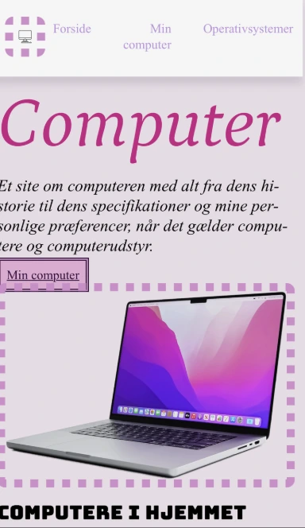
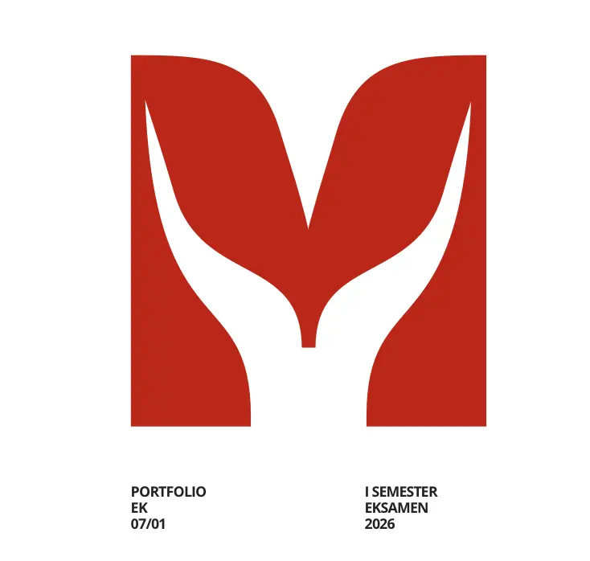
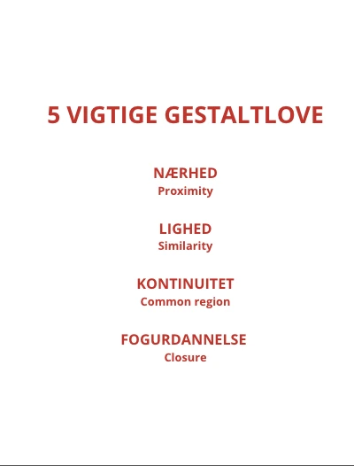
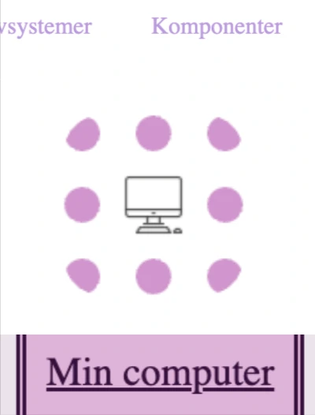

Responsivt design
Billeder og layout tilpasser sig mobil, tablet og desktop ved hjælp af breakpoints.

Dette projekt blev lavet, da vi lærte grundlæggende web. Vi arbejdede med breakpoints, globale komponenter og de fem gestaltlove. Billeder og layout er opbygget, så de fungerer på både mobil og desktop.
Gå til Min Computer-site
Billeder og layout tilpasser sig mobil, tablet og desktop ved hjælp af breakpoints.

Projektet anvender de fem gestaltlove for at skabe et overskueligt layout.

Sitet indeholder navigation og interne links mellem sider for en sammenhængende brugeroplevelse.